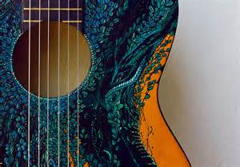

Type Of Guitars We Sell In Our Store
We have a wide range of collections of guitars and amplifiers of different top brands in our stores.We even sell all the accessories required for guitars
ACOUSTICS
Acoustic guitars rely on a soundboard to convert and amplify the energy of vibrating strings.Originating from instruments in Asia,they have been around in various designs for hundreds of years and don't require any electricity to get a good sound.They usually have a hollow body and are made of various types of wood.
We have all the types of acoutic guitars in different brands.Available brands in store are Yamaha, Washburn, Gibson,Martin and many more.
ACOUSTIC BASS
Acoustic basses usually have four strings are tuned the same way as electric basses:E, A, D, G,one octave down from the lowest four strings on a 6-string.They typically feature a wide body and have a warmer,full,mellow sound.In our store one can find specific brands in acoustic bass guitars. We also have guitars with all sizes and shapes which makes easier for the kids to find their size.
ELECTRICS
Unlike acoustics, electrics require an amplifier to produce a good sound. Companies first started making them in the 1930s when genres like jazz and swing were very popular. Originally, they had semi-hollow bodies for a well-rounded, warmer tone, but eventually, guitar makers figured out that solid construction typically worked better overall for the types of music people wanted them for.We sell all kinds of electric guitars witha wide range of styles, colors and brands.